Patek Philippe stands for the high quality and dependability of its timepieces.
In emphasizing its independence, the family-owned manufacture has always defined its own quality criteria,
recognized by the entire watchmaking community as the strictest ever compiled.
They define extremely rigorous standards with stringent inspection procedures that leave no room for compromise.
ster shopping Manage your order history and wish list Patek Philippe Create an account Save details for faster shopping
ABOUT US
WHO WE ARE
WHAT WE DO
WHAT WE EMPHASIZE
Patek Philippe has been pursuing traditional Genevan
watchmaking artistry without interruption since 1839.
The manufacture benefits from full creative freedom,
which allows it to design, develop, and craft watches
that connoisseurs consider to be
the world's finest – as pledged by its founders
Antoine Norbert de Patek and Adrien Philippe.
In addition to exceptional skills, Patek Philippe also
nurtures a tradition of innovation that has meanwhile
been crowned by over one hundred patents.
Patek Philippe is an independent manufacture with vertically
integrated production. It has its own research and development
department and creates and engineers all movements
and external components in its own workshops.
The individual parts of the movements and cases are produced,
finished, and assembled in-house, from simple models and
complicated timepieces to grand complications.
This competence accompanies each watch during its entire
lifetime – from the first sketches to final assembly.
Patek Philippe services and repairs all of
its watches ever made since 1839.
Patek Philippe is sparing no effort to preserve its independence.
Accordingly, the company relies on its own leverage to
achieve growth, both as regards investing for the future
and in its production resources. All major projects such as
the manufacture in Plan-les-Ouates with the annex building,
the exclusive salons in Geneva, Paris, and London,
the Patek Philippe Museum and the ateliers and subsidiaries
in the Jura region were fully self-financed.
Patek Philippe's intention is to independently pursue
the path that led to its success.
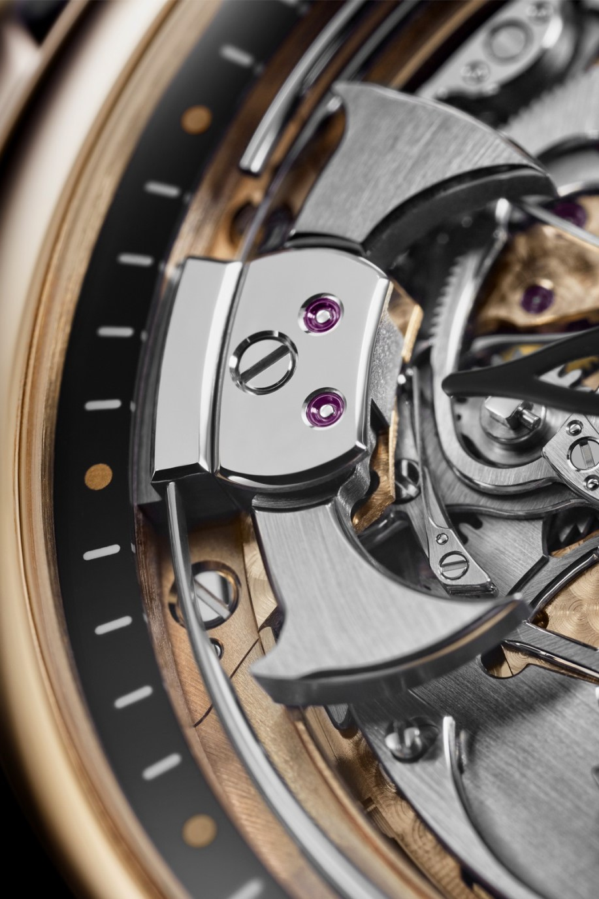
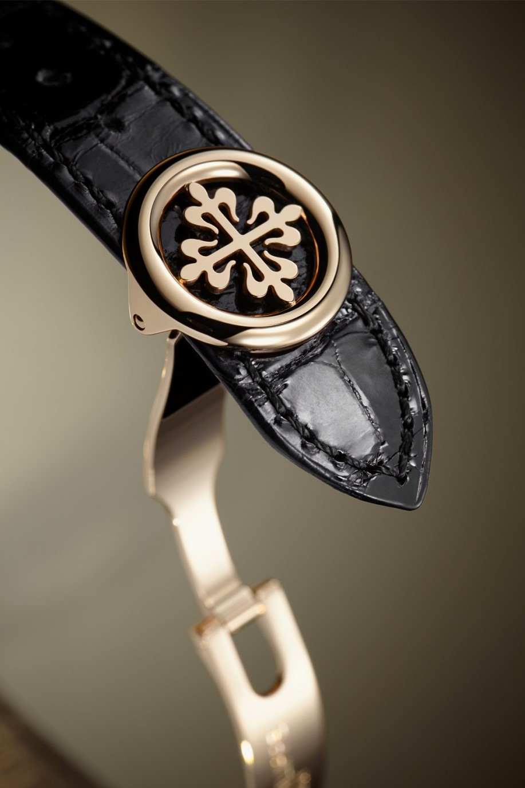
CALATRAVA CROSS
A good reason that may have convinced Jean Adrien Philippe to
adopt the Calatrava cross in 1887(Antoine Norbert de Patek had
passed away ten years earlier) was its graphically ornamental
quality and the fact that it was a centuries-old signature.
It is an aesthetically persuasive symbol whose beauty remains
unaffected by passing fashion trends. Thus, it is an ideal
hallmark for representing the values of Patek Philippe and
the long-term horizon of its corporate philosophy.
Today, the name Calatrava also has another meaning at
Patek Philippe: it identifies an entire family of wristwatches
that stand out with understated elegance and a timelessly
beautiful design vocabulary. It has its roots in the Ref.
96 launched in 1932. The design of the timepiece was inspired by
the Bauhaus style based on the principle that form follows
function – a signpost for modern wristwatches.
VIEW ALL PATEK PHILIPPE

CALATRAVA CROSS
A good reason that may have convinced Jean Adrien Philippe to
adopt the Calatrava cross in 1887(Antoine Norbert de Patek had
passed away ten years earlier) was its graphically ornamental
quality and the fact that it was a centuries-old signature.
It is an aesthetically persuasive symbol whose beauty remains
unaffected by passing fashion trends. Thus, it is an ideal
hallmark for representing the values of Patek Philippe and
the long-term horizon of its corporate philosophy.
Today, the name Calatrava also has another meaning at
Patek Philippe: it identifies an entire family of wristwatches
that stand out with understated elegance and a timelessly
beautiful design vocabulary. It has its roots in the Ref.
96 launched in 1932. The design of the timepiece was inspired by
the Bauhaus style based on the principle that form follows
function – a signpost for modern wristwatches.
VIEW ALL PATEK PHILIPPE
THE TEN VALUES OF PATEK PHILIPPE
- - INDEPENDENCE
- - TRADITION
- - INNOVATION
- - QUALITY AND FINE WORKMANSHIP
- - RARITY
- - VALUE
- - AESTHETICS
- - SERVICE
- - EMOTION
- - HERITAGE
EXPLANATION
-
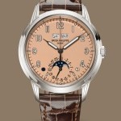
Collection
Grand Complications
Patek Philippe is the oldest independent, family-owned Genevan watch manufacture. Its independence enables it to control its own destiny while pursuing a long-term vision. The manufacture benefits from total creative freedom. It develops and crafts its watches and movements in-house according to its own quality criteria that are set forth in the Directives of the Patek Philippe Seal. This determination to remain independent is at the heart of Patek Philippe spirit; it guarantees continuity, resilience and trustworthiness.
-
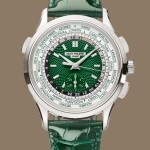
Collection
Complications
The history of the Patek Philippe manufacture, founded in 1839, is part of Geneva's great watchmaking tradition. It is the legacy born out of the experience and ingenuity of countless generations that safeguards and breathes life into the manufacture. It is a tradition of innovation that reinvents itself every day. True to noble artisanal techniques, master watchmakers and craftsmen consummately perpetuate, day after day, timeless gestures, lending their sharp eyes and deftness of touch to the fine art of watchmaking while remaining abreast of the latest technological developments.
-
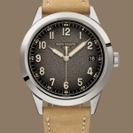
Collection
Calatrava
In keeping with its tradition of innovation, Patek Philippe constantly tests the frontiers of watchmaking artistry through its avant-garde achievements at the cutting edge of technology. The manufacture has asserted its pioneering role not least by successfully filing over 100 patents, including twenty of major importance to the history of horology. In the same context, the Patek Philippe Seal was established as a dynamic quality hallmark that accommodates technological progress in the service of long-term improvements of the functionality, reliability and rate accuracy of watches.
-
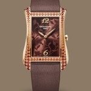
Collection
Gondolo
Antoine Norbert de Patek and Adrien Philippe had but one goal: to develop and manufacture the finest timepieces in the world. Today, more than ever, quality and fine workmanship remain the watchwords for production at Patek Philippe. This applies to the movements and the external elements, the technical concept, the performance of each function, and the rate accuracy of the timepieces. Thierry and Philippe Stern personally stand by all the commitments embodied in the Patek Philippe Seal, the most exclusive of quality commitments in the entire industry.
-
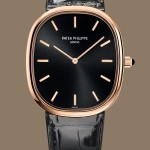
Collection
Golden Ellipse
Patek Philippe has always conceived its watches as exclusive creations. Over 200 different models are in regular production, crafted by the manufacture in small series of between a dozen and several hundred watches, each fitted with proprietary movements. The quality of the movements and watch cases is highly appreciated by watch enthusiasts. The rigorous quality standards applied to every step of the manufacturing process and the many months invested in completion make each Patek Philippe watch a precious, unique creation coveted by true connoisseurs.
-
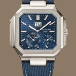
Collection
Cubitus
Each Patek Philippe watch embodies centuries of genuine experience and countless hours of work. Accordingly, it is a precious asset that will retain or even increase its value over the years. Many Patek Philippe models are genuine cult objects that fetch record prices at auction. They are deemed a solid investment amongst collectors with a high emotional value; most owners of a Patek Philippe watch consider it to be a precious and irreplaceable family heirloom.
-
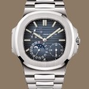
Collection
Nautilus
The aesthetic appeal of Patek Philippe watches is more than meets the eye. It is also an expression of their mechanical perfection. Their designs outlive passing fashion trends and always project contemporary beauty. Patek Philippe has established its own understated, timeless style: it is a harmonious combination of personality and discretion, elegance and uniqueness. The style has inspired true timepiece classics. It defines the creation and subtly evolving modification of watches that simply retain their irresistibility – yesterday, today, and tomorrow.
-
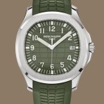
Collection
Aquanaut
To assure that its service addresses the loftiest expectations, Patek Philippe relies on a network of hand-picked dealers. The manufacture believes that it has a duty to provide the highest standard of after-sales service, and emphasizes this aspect as a key criterion of the Patek Philippe Seal. For each owner of a Patek Philippe watch, this ensures that after the sale, the timepiece will receive the care and attention needed to function reliably for generations.
-
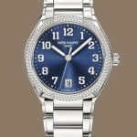
Collection
Twenty~4
When owners of a Patek Philippe talk about their watches, they will tell stories about passion, emotion, and affection. After all, a Patek Philippe is far more than an instrument that displays the time. It is a very personal and inimitable possession steeped in precious memories. The purchase of a Patek Philippe is often related to an important personal event – a professional success, a marriage or the birth of a child – and offering it as a gift is the most eloquent expression of love or endearment.
-
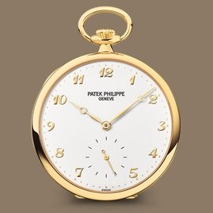
Collection
Pocket Watches
To acquire a Patek Philippe is to become the custodian of an artistic and scientific tradition that continues to inspire remarkable creations. It opens up the world of a family-owned company traditionally handed down from fathers to sons, with each generation dedicated to perpetuating a unique legacy. The purchase of a Patek Philippe enriches a family's assets with a precious object that will delight many coming generations. By building such a bridge from the past to the future, owners begin their own tradition in the true sense of the word
.